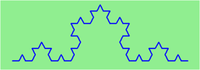
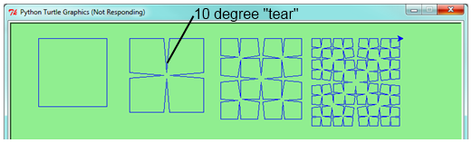

18. Recursion¶
Recursion means “defining something in terms of itself” usually at some smaller scale, perhaps multiple times, to achieve your objective. For example, we might say “A human being is someone whose mother is a human being”, or “a directory is a structure that holds files and (smaller) directories”, or “a family tree starts with a couple who have children, each with their own family sub-trees”.
Programming languages generally support recursion, which means that, in order to solve a problem, functions can call themselves to solve smaller subproblems.
18.1. Drawing Fractals¶
For our purposes, a fractal is a drawing which also has self-similar structure, where it can be defined in terms of itself.
Let us start by looking at the famous Koch fractal. An order 0 Koch fractal is simply a straight line of a given size.

An order 1 Koch fractal is obtained like this: instead of drawing just one line, draw instead four smaller segments, in the pattern shown here:

Now what would happen if we repeated this Koch pattern again on each of the order 1 segments? We’d get this order 2 Koch fractal:

Repeating our pattern again gets us an order 3 Koch fractal:
Now let us think about it the other way around. To draw a Koch fractal of order 3, we can simply draw four order 2 Koch fractals. But each of these in turn needs four order 1 Koch fractals, and each of those in turn needs four order 0 fractals. Ultimately, the only drawing that will take place is at order 0. This is very simple to code up in Python:
1 2 3 4 5 6 7 8 9 10 11 12 13 14 15 16 | def koch(t, order, size):
"""
Make turtle t draw a Koch fractal of 'order' and 'size'.
Leave the turtle facing the same direction.
"""
if order == 0: # The base case is just a straight line
t.forward(size)
else:
koch(t, order-1, size/3) # Go 1/3 of the way
t.left(60)
koch(t, order-1, size/3)
t.right(120)
koch(t, order-1, size/3)
t.left(60)
koch(t, order-1, size/3)
|
The key thing that is new here is that if order is not zero, koch calls itself recursively to get its job done.
Let’s make a simple observation and tighten up this code. Remember that turning right by 120 is the same as turning left by -120. So with a bit of clever rearrangement, we can use a loop instead of lines 10-16:
1 2 3 4 5 6 7 | def koch(t, order, size):
if order == 0:
t.forward(size)
else:
for angle in [60, -120, 60, 0]:
koch(t, order-1, size/3)
t.left(angle)
|
The final turn is 0 degrees — so it has no effect. But it has allowed us to find a pattern and reduce seven lines of code to three, which will make things easier for our next observations.
Recursion, the high-level view
One way to think about this is to convince yourself that the function works correctly when you call it for an order 0 fractal. Then do a mental leap of faith, saying “the fairy godmother (or Python, if you can think of Python as your fairy godmother) knows how to handle the recursive level 0 calls for me on lines 11, 13, 15, and 17, so I don’t need to think about that detail!” All I need to focus on is how to draw an order 1 fractal if I can assume the order 0 one is already working.
You’re practicing mental abstraction — ignoring the subproblem while you solve the big problem.
If this mode of thinking works (and you should practice it!), then take it to the next level. Aha! now can I see that it will work when called for order 2 under the assumption that it is already working for level 1.
And, in general, if I can assume the order n-1 case works, can I just solve the level n problem?
Students of mathematics who have played with proofs of induction should see some very strong similarities here.
Recursion, the low-level operational view
Another way of trying to understand recursion is to get rid of it! If we had separate functions to draw a level 3 fractal, a level 2 fractal, a level 1 fractal and a level 0 fractal, we could simplify the above code, quite mechanically, to a situation where there was no longer any recursion, like this:
1 2 3 4 5 6 7 8 9 10 11 12 13 14 15 16 17 | def koch_0(t, size):
t.forward(size)
def koch_1(t, size):
for angle in [60, -120, 60, 0]:
koch_0(t, size/3)
t.left(angle)
def koch_2(t, size):
for angle in [60, -120, 60, 0]:
koch_1(t, size/3)
t.left(angle)
def koch_3(t, size):
for angle in [60, -120, 60, 0]:
koch_2(t, size/3)
t.left(angle)
|
This trick of “unrolling” the recursion gives us an operational view of what happens. You can trace the program into koch_3, and from there, into koch_2, and then into koch_1, etc., all the way down the different layers of the recursion.
This might be a useful hint to build your understanding. The mental goal is, however, to be able to do the abstraction!
18.2. Recursive data structures¶
All of the Python data types we have seen can be grouped inside lists and tuples in a variety of ways. Lists and tuples can also be nested, providing many possibilities for organizing data. The organization of data for the purpose of making it easier to use is called a data structure.
It’s election time and we are helping to compute the votes as they come in. Votes arriving from individual wards, precincts, municipalities, counties, and states are sometimes reported as a sum total of votes and sometimes as a list of subtotals of votes. After considering how best to store the tallies, we decide to use a nested number list, which we define as follows:
A nested number list is a list whose elements are either:
- numbers
- nested number lists
Notice that the term, nested number list is used in its own definition. Recursive definitions like this are quite common in mathematics and computer science. They provide a concise and powerful way to describe recursive data structures that are partially composed of smaller and simpler instances of themselves. The definition is not circular, since at some point we will reach a list that does not have any lists as elements.
Now suppose our job is to write a function that will sum all of the values in a nested number list. Python has a built-in function which finds the sum of a sequence of numbers:
>>> sum([1, 2, 8])
11
For our nested number list, however, sum will not work:
>>> sum([1, 2, [11, 13], 8])
Traceback (most recent call last):
File "<interactive input>", line 1, in <module>
TypeError: unsupported operand type(s) for +: 'int' and 'list'
>>>
The problem is that the third element of this list, [11, 13], is itself a list, so it cannot just be added to 1, 2, and 8.
18.3. Processing recursive number lists¶
To sum all the numbers in our recursive nested number list we need to traverse the list, visiting each of the elements within its nested structure, adding any numeric elements to our sum, and recursively repeating the summing process with any elements which are themselves sub-lists.
Thanks to recursion, the Python code needed to sum the values of a nested number list is surprisingly short:
1 2 3 4 5 6 7 8 | def r_sum(nested_num_list):
tot = 0
for element in nested_num_list:
if type(element) == type([]):
tot += r_sum(element)
else:
tot += element
return tot
|
The body of r_sum consists mainly of a for loop that traverses nested_num_list. If element is a numerical value (the else branch), it is simply added to tot. If element is a list, then r_sum is called again, with the element as an argument. The statement inside the function definition in which the function calls itself is known as the recursive call.
The example above has a base case (on line 13) which does not lead to a recursive call: the case where the element is not a (sub-) list. Without a base case, you’ll have infinite recursion, and your program will not work.
Recursion is truly one of the most beautiful and elegant tools in computer science.
A slightly more complicated problem is finding the largest value in our nested number list:
1 2 3 4 5 6 7 8 9 10 11 12 13 14 15 16 17 18 19 20 21 22 23 24 | def r_max(nxs):
"""
Find the maximum in a recursive structure of lists
within other lists.
Precondition: No lists or sublists are empty.
"""
largest = None
first_time = True
for e in nxs:
if type(e) == type([]):
val = r_max(e)
else:
val = e
if first_time or val > largest:
largest = val
first_time = False
return largest
test(r_max([2, 9, [1, 13], 8, 6]), 13)
test(r_max([2, [[100, 7], 90], [1, 13], 8, 6]), 100)
test(r_max([[[13, 7], 90], 2, [1, 100], 8, 6]), 100)
test(r_max(["joe", ["sam", "ben"]]), "sam")
|
Tests are included to provide examples of r_max at work.
The added twist to this problem is finding a value for initializing largest. We can’t just use nxs[0], since that could be either a element or a list. To solve this problem (at every recursive call) we initialize a Boolean flag (at line 8). When we’ve found the value of interest, (at line 15) we check to see whether this is the initializing (first) value for largest, or a value that could potentially change largest.
Again here we have a base case at line 13. If we don’t supply a base case, Python stops after reaching a maximum recursion depth and returns a runtime error. See how this happens, by running this little script which we will call infinite_recursion.py:
1 2 3 4 5 | def recursion_depth(number):
print("{0}, ".format(number), end='')
recursion_depth(number + 1)
recursion_depth(0)
|
After watching the messages flash by, you will be presented with the end of a long traceback that ends with a message like the following:
RuntimeError: maximum recursion depth exceeded ...
We would certainly never want something like this to happen to a user of one of our programs, so in the next chapter we’ll see how errors, any kinds of errors, are handled in Python.
18.4. Case study: Fibonacci numbers¶
The famous Fibonacci sequence 0, 1, 1, 2, 3, 5, 8, 13, 21, 34, 55, 89, 134, ... was devised by Fibonacci (1170-1250), who used this to model the breeding of (pairs) of rabbits. If, in generation 7 you had 21 pairs in total, of which 13 were adults, then next generation the adults will all have bred new children, and the previous children will have grown up to become adults. So in generation 8 you’ll have 13+21=34, of which 21 are adults.
This model to explain rabbit breeding made the simplifying assumption that rabbits never died. Scientists often make (unrealistic) simplifying assumptions and restrictions to make some headway with the problem.
If we number the terms of the sequence from 0, we can describe each term recursively as the sum of the previous two terms:
fib(0) = 0
fib(1) = 1
fib(n) = fib(n-1) + fib(n-2) for n >= 2
This translates very directly into some Python:
1 2 3 4 5 | def fib(n):
if n <= 1:
return n
t = fib(n-1) + fib(n-2)
return t
|
This is a particularly inefficient algorithm, and we’ll show one way of fixing it when we learn about dictionaries:
1 2 3 4 5 6 7 | import time
t0 = time.clock()
n = 35
result = fib(n)
t1 = time.clock()
print('fib({0}) = {1}, ({2:.2f} secs)'.format(n, result, t1-t0))
|
We get the correct result, but an exploding amount of work!
fib(35) = 9227465, (10.54 secs)
18.5. Example with recursive directories and files¶
The following program lists the contents of a directory and all its subdirectories.
1 2 3 4 5 6 7 8 9 10 11 12 13 14 15 16 17 18 19 20 21 22 23 | import os
def get_dirlist(path):
"""
Return a sorted list of all entries in path.
This returns just the names, not the full path to the names.
"""
dirlist = os.listdir(path)
dirlist.sort()
return dirlist
def print_files(path, prefix = ""):
""" Print recursive listing of contents of path """
if prefix == "": # Detect outermost call, print a heading
print('Folder listing for', path)
prefix = "| "
dirlist = get_dirlist(path)
for f in dirlist:
print(prefix+f) # Print the line
fullname = os.path.join(path, f) # Turn name into full pathname
if os.path.isdir(fullname): # If a directory, recurse.
print_files(fullname, prefix + "| ")
|
Calling the function print_files with some folder name will produce output similar to this:
Folder listing for c:\python31\Lib\site-packages\pygame\examples
| __init__.py
| aacircle.py
| aliens.py
| arraydemo.py
| blend_fill.py
| blit_blends.py
| camera.py
| chimp.py
| cursors.py
| data
| | alien1.png
| | alien2.png
| | alien3.png
...
18.6. Glossary¶
- base case
- A branch of the conditional statement in a recursive function that does not give rise to further recursive calls.
- infinite recursion
- A function that calls itself recursively without ever reaching any base case. Eventually, infinite recursion causes a runtime error.
- recursion
- The process of calling a function that is already executing.
- recursive call
- The statement that calls an already executing function. Recursion can also be indirect — function f can call g which calls h, and h could make a call back to f.
- recursive definition
- A definition which defines something in terms of itself. To be useful it must include base cases which are not recursive. In this way it differs from a circular definition. Recursive definitions often provide an elegant way to express complex data structures, like a directory that can contain other directories, or a menu that can contain other menus.
18.7. Exercises¶
Modify the Koch fractal program so that it draws a Koch snowflake, like this:

Draw a Cesaro torn line fractal, of the order given by the user. We show four different lines of orders 0,1,2,3. In this example, the angle of the tear is 10 degrees.

Four lines make a square. Use the code in part a) to draw cesaro squares. Varying the angle gives interesting effects — experiment a bit, or perhaps let the user input the angle of the tear.

- (For the mathematically inclined). In the squares shown here, the higher-order drawings become a little larger. (Look at the bottom lines of each square - they’re not aligned.) This is because we just halved the drawn part of the line for each recursive subproblem. So we’ve “grown” the overall square by the width of the tear(s). Can you solve the geometry problem so that the total size of the subproblem case (including the tear) remains exactly the same size as the original?
A Sierpinski triangle of order 0 is an equilateral triangle. An order 1 triangle can be drawn by drawing 3 smaller triangles (shown slightly disconnected here, just to help our understanding). Higher order 2 and 3 triangles are also shown. Draw Sierpinski triangles of any order input by the user.

Adapt the above program to change the color of its three sub-triangles at some depth of recursion. The illustration below shows two cases: on the left, the color is changed at depth 0 (the outmost level of recursion), on the right, at depth 2. If the user supplies a negative depth, the color never changes. (Hint: add a new optional parameter colorChangeDepth (which defaults to -1), and make this one smaller on each recursive subcall. Then, in the section of code before you recurse, test whether the parameter is zero, and change color.)

Write a function, recursive_min, that returns the smallest value in a nested number list. Assume there are no empty lists or sublists:
test(recursive_min([2, 9, [1, 13], 8, 6]), 1) test(recursive_min([2, [[100, 1], 90], [10, 13], 8, 6]), 1) test(recursive_min([2, [[13, -7], 90], [1, 100], 8, 6]), -7) test(recursive_min([[[-13, 7], 90], 2, [1, 100], 8, 6]), -13)
Write a function count that returns the number of occurrences of target in a nested list:
test(count(2, []), 0) test(count(2, [2, 9, [2, 1, 13, 2], 8, [2, 6]]), 4) test(count(7, [[9, [7, 1, 13, 2], 8], [7, 6]]), 2) test(count(15, [[9, [7, 1, 13, 2], 8], [2, 6]]), 0) test(count(5, [[5, [5, [1, 5], 5], 5], [5, 6]]), 6) test(count('a', [['this',['a',['thing','a'],'a'],'is'], ['a','easy']]), 4)
Write a function flatten that returns a simple list containing all the values in a nested list:
test(flatten([2,9,[2,1,13,2],8,[2,6]]),[2,9,2,1,13,2,8,2,6]) test(flatten([[9,[7,1,13,2],8],[7,6]]),[9,7,1,13,2,8,7,6]) test(flatten([[9,[7,1,13,2],8],[2,6]]),[9,7,1,13,2,8,2,6]) test(flatten([['this',['a',['thing'],'a'],'is'],['a','easy']]), ['this','a','thing','a','is','a','easy']) test(flatten([]), [])
Rewrite the fibonacci algorithm without using recursion. Can you find bigger terms of the sequence? Can you find fib(200)?
Use help to find out what sys.getrecursionlimit() and sys.setrecursionlimit(n) do. Create several experiments similar to what was done in infinite_recursion.py to test your understanding of how these module functions work.
Write a program that walks a directory structure (as in the last section of this chapter), but instead of printing filenames, it returns a list of all the full paths of files in the directory or the subdirectories. (Don’t include directories in this list — just files.) For example, the output list might have elements like this:
['C:\Python31\Lib\site-packages\pygame\docs\ref\mask.html', 'C:\Python31\Lib\site-packages\pygame\docs\ref\midi.html', ... 'C:\Python31\Lib\site-packages\pygame\examples\aliens.py', ... 'C:\Python31\Lib\site-packages\pygame\examples\data\boom.wav', ... ]
Write a program named litter.py that creates an empty file named trash.txt in each subdirectory of a directory tree given the root of the tree as an argument (or the current directory as a default). Now write a program named cleanup.py that removes all these files.
Hint #1: Use the program from the example in the last section of this chapter as a basis for these two recursive programs. Because you’re going to destroy files on your disks, you better get this right, or you risk losing files you care about. So excellent advice is that initially you should fake the deletion of the files — just print the full path names of each file that you intend to delete. Once you’re happy that your logic is correct, and you can see that you’re not deleting the wrong things, you can replace the print statement with the real thing.
Hint #2: Look in the os module for a function that removes files.